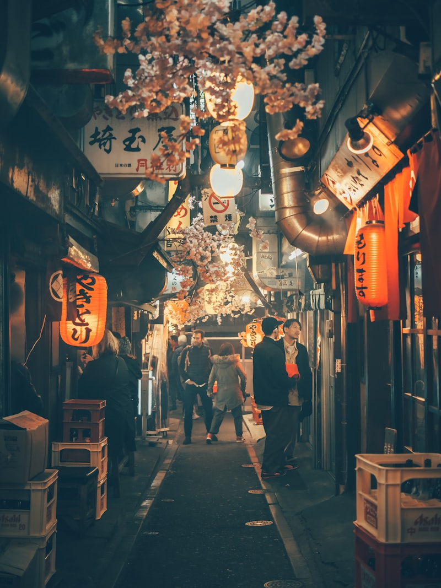
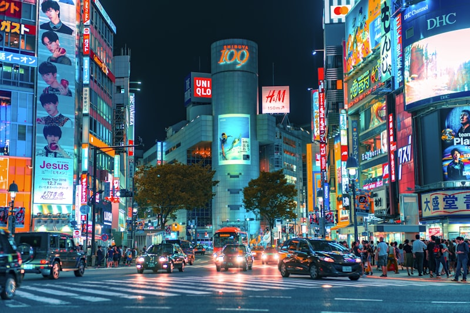
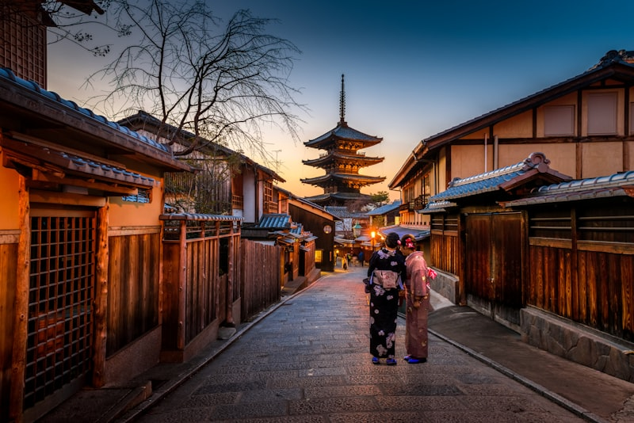
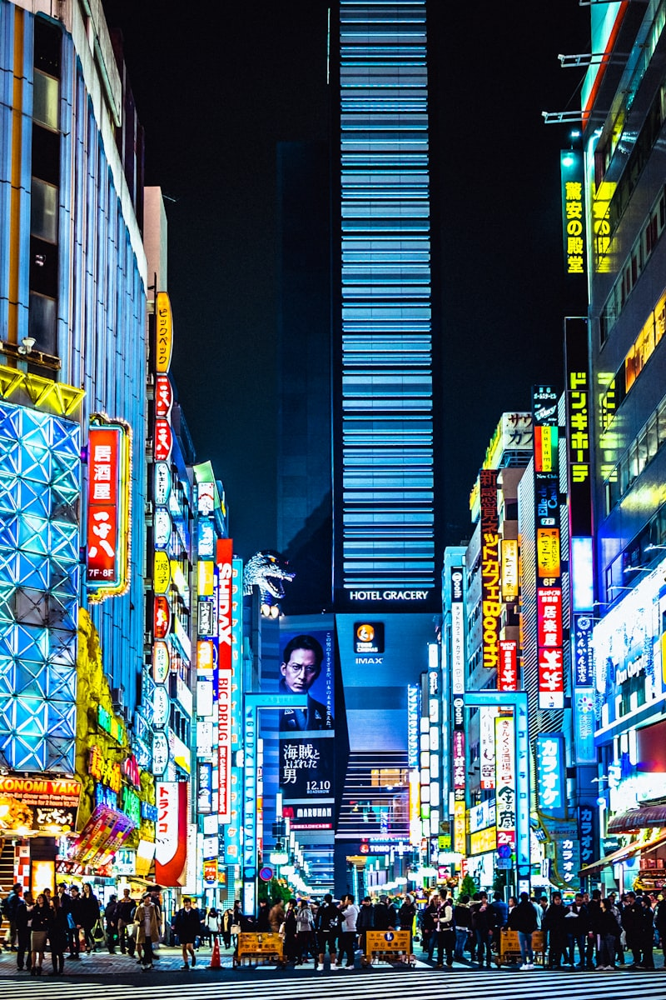

Itinerary · 行程大纲
七日行迹
从成田机场落地的那一刻起，每一天都有明确的主题与节奏。以下是完整的行程脉络，可根据体力与兴趣灵活调整。
Day 01

抵达东京 · 初遇霓虹
成田机场 → 浅草 · 晴空塔
下午抵达成田机场，乘坐 Skyliner 直达市区。傍晚漫步浅草寺，仰望晴空塔的灯光点亮整片夜空，正式开启日本之旅。
Day 02

东京漫步 · 潮流心脏
涩谷 · 原宿 · 明治神宫
清晨在明治神宫感受都市中的森林静谧，午后穿梭原宿竹下通的潮流店铺，傍晚在涩谷十字路口记录全世界最繁忙的人流交错。
Day 03
东京 → 富士山 · 圣山朝拜
河口湖 · 忍野八海
搭乘富士急行线前往河口湖，在湖畔捕捉富士山的完美倒影。午后漫步忍野八海的清澈涌泉，傍晚入住温泉旅馆享受露天风吕。
Day 04

富士山 → 京都 · 千本鸟居
伏见稻荷大社 · 祇园花见小路
新干线一路西行抵达京都。午后直奔伏见稻荷大社，穿越万千朱红鸟居的震撼长廊。傍晚在祇园花见小路偶遇艺伎的优雅身影。
Day 05

京都古韵 · 千年回响
清水寺 · 金阁寺 · 岚山竹林
清晨在清水寺俯瞰京都全景，午后拜访金阁寺的金色倒影，傍晚漫步岚山竹林小径，听竹叶在风中沙沙作响，感受最纯粹的日式美学。
Day 06

京都 → 大阪 · 天下厨房
大阪城 · 道顿堀
短途列车半小时抵达大阪。上午参观宏伟的大阪城天守阁，傍晚扎进道顿堀的美食海洋——章鱼烧、大阪烧、炸串，吃到扶墙而出。
Day 07

大阪收官 · 购物与告别
心斋桥 · 关西机场
最后一天在心斋桥筋商店街尽情扫货——药妆、电器、零食满载而归。下午前往关西国际机场，带着满满的回忆踏上归途。